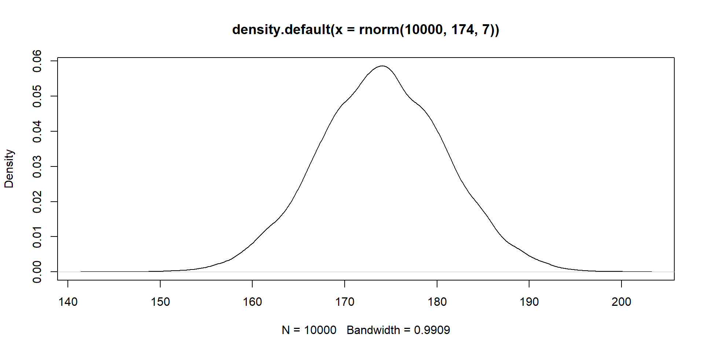
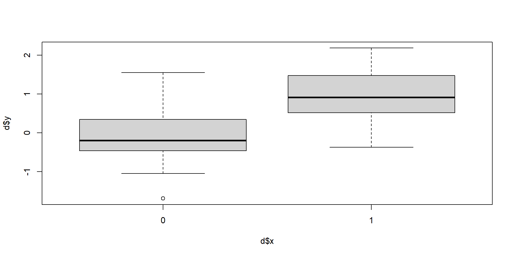

Power analysis through simulation in R
Niklas Johannes
You measure height in a sample (the observable consequences). What’s the data generating process?
\(Normal(\mu, \sigma)\)
\(Normal(174, 7)\) aka rnorm(174, 7)
rnorm: You say that the underlying data generating process is a normal distributionrbinom: You say that the underlying data generating process is a binomial distributionImportant: Those are assumptions you make explicit and they can be wrong.
You are explicitly claiming that the observable outcome (the data) have been generated by this true underlying process. The process is a normal distribution with a true effect size (\(\mu\)) and a true standard deviation (\(\sigma\)) for two data generating processes: \(Normal(100, 15)\) and \(Normal(105, 15)\)
Welch Two Sample t-test
data: control and treatment
t = -3.8139, df = 194.83, p-value = 0.0001835
alternative hypothesis: true difference in means is not equal to 0
95 percent confidence interval:
-12.202637 -3.884032
sample estimates:
mean of x mean of y
98.56637 106.60970 Here’s the good news: In (much of) the (social) sciences we rely on a common data generating process: the linear model.
t-test, regression, logistic regression, machine learning are all variations of the linear model.
\(y = \beta_0 + \beta_1x\)
\(y = \beta_0 + \beta_1x\): What’s \(x\) here?
Our group is \(x\).
| group | y | x |
|---|---|---|
| control | -0.2494899 | 0 |
| control | -0.5601157 | 0 |
| control | 0.2854088 | 0 |
| control | 0.1678379 | 0 |
| control | -0.1974034 | 0 |
| control | 0.1733741 | 0 |
| control | 0.3127256 | 0 |
| control | -0.1063440 | 0 |
| control | 0.5726753 | 0 |
| control | 0.0721174 | 0 |
| control | -1.0158127 | 0 |
| control | 2.9248489 | 0 |
| control | -1.2836184 | 0 |
| control | 0.1306958 | 0 |
| control | -0.9527664 | 0 |
| treatment | 1.8535385 | 1 |
| treatment | -0.1692150 | 1 |
| treatment | 0.1360748 | 1 |
| treatment | -0.6536403 | 1 |
| treatment | 1.0767516 | 1 |
| treatment | 1.9791449 | 1 |
| treatment | 0.3529616 | 1 |
| treatment | 0.2250301 | 1 |
| treatment | 1.5707393 | 1 |
| treatment | 2.3276022 | 1 |
| treatment | 1.7890741 | 1 |
| treatment | 1.2629201 | 1 |
| treatment | 0.6024221 | 1 |
| treatment | 1.2544137 | 1 |
| treatment | -0.1181407 | 1 |

In other words, when we predict values for the control (aka \(x=0\)) group, our best predictor for outcome scores becomes \(\beta_0\) (also known as the intercept): the mean for the control group.
We already know that the intercept (\(\beta_0\)) is the mean of the control group. How would we now go from that mean to predicting scores of the treatment group? What do we need to add to the mean of the control group to get the mean of the treatment group?
Mean of the control group (our intercept or \(\beta_0\)):
Difference (our slope or \(\beta_1\)):
Mean of the treatment group (\(\beta_0 + \beta_1\)):
Linear model:
Call:
lm(formula = y ~ x, data = d)
Residuals:
Min 1Q Median 3Q Max
-1.55295 -0.65031 0.08313 0.36148 2.90657
Coefficients:
Estimate Std. Error t value Pr(>|t|)
(Intercept) 0.01828 0.24306 0.075 0.941
x1 0.88104 0.34374 2.563 0.016 *
---
Signif. codes: 0 '***' 0.001 '**' 0.01 '*' 0.05 '.' 0.1 ' ' 1
Residual standard error: 0.9414 on 28 degrees of freedom
Multiple R-squared: 0.19, Adjusted R-squared: 0.1611
F-statistic: 6.57 on 1 and 28 DF, p-value: 0.01604
Two Sample t-test
data: control and treatment
t = -2.5631, df = 28, p-value = 0.01604
alternative hypothesis: true difference in means is not equal to 0
95 percent confidence interval:
-1.585146 -0.176926
sample estimates:
mean of x mean of y
0.01827555 0.89931179
Call:
lm(formula = y ~ x, data = d)
Residuals:
Min 1Q Median 3Q Max
-1.55295 -0.65031 0.08313 0.36148 2.90657
Coefficients:
Estimate Std. Error t value Pr(>|t|)
(Intercept) 0.01828 0.24306 0.075 0.941
x1 0.88104 0.34374 2.563 0.016 *
---
Signif. codes: 0 '***' 0.001 '**' 0.01 '*' 0.05 '.' 0.1 ' ' 1
Residual standard error: 0.9414 on 28 degrees of freedom
Multiple R-squared: 0.19, Adjusted R-squared: 0.1611
F-statistic: 6.57 on 1 and 28 DF, p-value: 0.01604There’s no \(x\) here, so all we’re left with is the intercept, which we test against our H0. A single number (aka the mean) predicts \(y\).
\[\begin{align} & y = \beta_0 \end{align}\]Linear model:
Call:
lm(formula = y ~ 1, data = d[d$x == 1, ])
Residuals:
Min 1Q Median 3Q Max
-1.5530 -0.7188 0.1774 0.7806 1.4283
Coefficients:
Estimate Std. Error t value Pr(>|t|)
(Intercept) 0.8993 0.2356 3.816 0.00189 **
---
Signif. codes: 0 '***' 0.001 '**' 0.01 '*' 0.05 '.' 0.1 ' ' 1
Residual standard error: 0.9127 on 14 degrees of freedom
Call:
lm(formula = y ~ 1, data = d[d$x == 1, ])
Residuals:
Min 1Q Median 3Q Max
-1.5530 -0.7188 0.1774 0.7806 1.4283
Coefficients:
Estimate Std. Error t value Pr(>|t|)
(Intercept) 0.8993 0.2356 3.816 0.00189 **
---
Signif. codes: 0 '***' 0.001 '**' 0.01 '*' 0.05 '.' 0.1 ' ' 1
Residual standard error: 0.9127 on 14 degrees of freedomRemember: Paired samples t-test is just testing the difference in scores against H0. This way, it turns into a one-sample t-test, so all we’re left with is, once again, the intercept, which we test against our H0. A single number (aka the mean) predicts \(y\) (technically \(y_{difference}\).
\[\begin{align} & y_{treatment} - y_{control} = \beta_0 \end{align}\]Linear model:
Call:
lm(formula = treatment - control ~ 1)
Residuals:
Min 1Q Median 3Q Max
-2.5430 -0.6952 0.1170 0.9649 1.9239
Coefficients:
Estimate Std. Error t value Pr(>|t|)
(Intercept) 0.8810 0.3151 2.796 0.0143 *
---
Signif. codes: 0 '***' 0.001 '**' 0.01 '*' 0.05 '.' 0.1 ' ' 1
Residual standard error: 1.22 on 14 degrees of freedom
Call:
lm(formula = treatment - control ~ 1)
Residuals:
Min 1Q Median 3Q Max
-2.5430 -0.6952 0.1170 0.9649 1.9239
Coefficients:
Estimate Std. Error t value Pr(>|t|)
(Intercept) 0.8810 0.3151 2.796 0.0143 *
---
Signif. codes: 0 '***' 0.001 '**' 0.01 '*' 0.05 '.' 0.1 ' ' 1
Residual standard error: 1.22 on 14 degrees of freedomSame as before: We predict scores with the group membership (aka the mean in each group). Doesn’t matter whether we predict it from two (t-test) or more groups (ANOVA). Now we just have an indicator for membership for each group: dummy coding.
| groups | \(x_1\) | \(x_2\) |
|---|---|---|
| control | 0 | 0 |
| low | 1 | 0 |
| high | 0 | 1 |
| groups | \(x_1\) | \(x_2\) |
|---|---|---|
| control | 0 | 0 |
| low | 1 | 0 |
| high | 0 | 1 |
| groups | \(x_1\) | \(x_2\) |
|---|---|---|
| control | 0 | 0 |
| low | 1 | 0 |
| high | 0 | 1 |
| groups | \(x_1\) | \(x_2\) |
|---|---|---|
| control | 0 | 0 |
| low | 1 | 0 |
| high | 0 | 1 |
What do we need to go from the control mean to the low mean? What do we need to go from control mean to high mean? Same as with the t-test: the difference between those means.
If we know how to simulate a t-test, we know how to simulate an ANOVA (because both are just linear models): Imitate the data generating process.
\[\begin{align} & y = \beta_0 + \beta_1x_1 + \beta_2x_2 \end{align}\] y condition group_low group_high
1 106.49227 control 0 0
2 87.82910 control 0 0
3 121.66152 control 0 0
4 93.52831 control 0 0
5 109.83472 control 0 0
6 124.82888 low 1 0
7 108.24242 low 1 0
8 143.63591 low 1 0
9 129.64349 low 1 0
10 121.34641 low 1 0
11 144.14826 high 0 1
12 150.18933 high 0 1
13 141.34749 high 0 1
14 95.10365 high 0 1
15 144.27324 high 0 1# A tibble: 3 x 2
condition mean
<fct> <dbl>
1 control 104.
2 low 126.
3 high 135.
Call:
lm(formula = y ~ group_low + group_high, data = d)
Residuals:
Min 1Q Median 3Q Max
-39.909 -7.267 4.104 9.198 18.096
Coefficients:
Estimate Std. Error t value Pr(>|t|)
(Intercept) 103.869 7.547 13.763 1.04e-08 ***
group_low 21.670 10.673 2.030 0.0651 .
group_high 31.143 10.673 2.918 0.0129 *
---
Signif. codes: 0 '***' 0.001 '**' 0.01 '*' 0.05 '.' 0.1 ' ' 1
Residual standard error: 16.88 on 12 degrees of freedom
Multiple R-squared: 0.4272, Adjusted R-squared: 0.3317
F-statistic: 4.475 on 2 and 12 DF, p-value: 0.03532
Call:
lm(formula = y ~ group_low + group_high, data = d)
Residuals:
Min 1Q Median 3Q Max
-39.909 -7.267 4.104 9.198 18.096
Coefficients:
Estimate Std. Error t value Pr(>|t|)
(Intercept) 103.869 7.547 13.763 1.04e-08 ***
group_low 21.670 10.673 2.030 0.0651 .
group_high 31.143 10.673 2.918 0.0129 *
---
Signif. codes: 0 '***' 0.001 '**' 0.01 '*' 0.05 '.' 0.1 ' ' 1
Residual standard error: 16.88 on 12 degrees of freedom
Multiple R-squared: 0.4272, Adjusted R-squared: 0.3317
F-statistic: 4.475 on 2 and 12 DF, p-value: 0.03532The lm call will automatically dummy code factors.
Call:
lm(formula = y ~ condition, data = d)
Residuals:
Min 1Q Median 3Q Max
-39.909 -7.267 4.104 9.198 18.096
Coefficients:
Estimate Std. Error t value Pr(>|t|)
(Intercept) 103.869 7.547 13.763 1.04e-08 ***
conditionhigh 31.143 10.673 2.918 0.0129 *
conditionlow 21.670 10.673 2.030 0.0651 .
---
Signif. codes: 0 '***' 0.001 '**' 0.01 '*' 0.05 '.' 0.1 ' ' 1
Residual standard error: 16.88 on 12 degrees of freedom
Multiple R-squared: 0.4272, Adjusted R-squared: 0.3317
F-statistic: 4.475 on 2 and 12 DF, p-value: 0.03532n <- 40
m1 <- 100
m2 <- 103
m3 <- 105
sd <- 8
draws <- 1e4
pvalues <- NULL
for (i in 1:n) {
group1 <- rnorm(n, m1, sd)
group2 <- rnorm(n, m2, sd)
group3 <- rnorm(n, m3, sd)
dat <- data.frame(
scores = c(group1, group2, group3),
condition = as.factor(rep(c("group1", "group2", "group3"), each = n))
)
m <- summary(lm(scores ~ condition, data = dat))
pvalues[i] <- broom::glance(m)$p.value
}
sum(pvalues < 0.05) / length(pvalues)[1] 0.7You can access the p-value by storing the summary in an object (as a list) and accessing its component. For the lm summary, that’s a bit less straightforward. See https://stackoverflow.com/questions/5587676/pull-out-p-values-and-r-squared-from-a-linear-regression.
Let’s just swap the low and high conditions.
Call:
lm(formula = y ~ condition, data = d)
Residuals:
Min 1Q Median 3Q Max
-39.909 -7.267 4.104 9.198 18.096
Coefficients:
Estimate Std. Error t value Pr(>|t|)
(Intercept) 103.869 7.547 13.763 1.04e-08 ***
conditionlow 21.670 10.673 2.030 0.0651 .
conditionhigh 31.143 10.673 2.918 0.0129 *
---
Signif. codes: 0 '***' 0.001 '**' 0.01 '*' 0.05 '.' 0.1 ' ' 1
Residual standard error: 16.88 on 12 degrees of freedom
Multiple R-squared: 0.4272, Adjusted R-squared: 0.3317
F-statistic: 4.475 on 2 and 12 DF, p-value: 0.03532
Call:
lm(formula = y ~ condition, data = d2)
Residuals:
Min 1Q Median 3Q Max
-39.909 -7.267 4.104 9.198 18.096
Coefficients:
Estimate Std. Error t value Pr(>|t|)
(Intercept) 103.869 7.547 13.763 1.04e-08 ***
conditionlow 31.143 10.673 2.918 0.0129 *
conditionhigh 21.670 10.673 2.030 0.0651 .
---
Signif. codes: 0 '***' 0.001 '**' 0.01 '*' 0.05 '.' 0.1 ' ' 1
Residual standard error: 16.88 on 12 degrees of freedom
Multiple R-squared: 0.4272, Adjusted R-squared: 0.3317
F-statistic: 4.475 on 2 and 12 DF, p-value: 0.03532# Effect Size for ANOVA
Parameter | Eta2 | 95% CI
-------------------------------
condition | 0.43 | [0.03, 1.00]
- One-sided CIs: upper bound fixed at (1).# Effect Size for ANOVA
Parameter | Eta2 | 95% CI
-------------------------------
condition | 0.43 | [0.03, 1.00]
- One-sided CIs: upper bound fixed at (1).Remember drawing two scores from the same unit?
\[ \begin{bmatrix} var & cov \\ cov & var \\ \end{bmatrix} \]
We just need to extend that to the number of measures:
\[ \begin{bmatrix} var & cov & cov\\ cov & var & cov\\ cov & cov & var \end{bmatrix} \]
\[ \begin{bmatrix} SD_{x_1} & r_{x_1x_2} & r_{x_1x_3}\\ r_{x_2x_1} & SD_{x_2} & r_{x_2x_2}\\ r_{x_3x_1} & r_{x_3x_2} & SD_{x_3} \end{bmatrix} \]
Define our parameters and get variance-covariance matrix.
means <- c(control = 100, low = 103, high = 105)
sd <- 8
correlation <- 0.4
covariance <- correlation * sd * sd
our_matrix <- matrix(
c(
sd**2, covariance, covariance,
covariance, sd**2, covariance,
covariance, covariance, sd**2
),
ncol = 3
)
our_matrix [,1] [,2] [,3]
[1,] 64.0 25.6 25.6
[2,] 25.6 64.0 25.6
[3,] 25.6 25.6 64.0library(MASS)
set.seed(42)
d <-
mvrnorm(
200,
means,
our_matrix
)
d <- as.data.frame(d)
d$id <- factor(1:200)
head(d) control low high id
1 102.65124 93.16169 86.70051 1
2 98.88458 109.62849 109.98486 2
3 94.79098 97.77544 108.68290 3
4 90.66920 94.06642 111.49926 4
5 98.78622 106.29663 95.40168 5
6 99.54111 110.82243 99.60934 6Can we recover our numbers of means = c(100, 103, 105), SD of 8, and correlation of 0.4?
lm this timeThe linear model has several assumptions, one of which is that observations are independent. They clearly aren’t (we specified a correlation between them after all). So we need to go for models that take this dependence into account.
For most cases, data need to be in the long format:
control low high id
1 102.65124 93.16169 86.70051 1
2 98.88458 109.62849 109.98486 2
3 94.79098 97.77544 108.68290 3
4 90.66920 94.06642 111.49926 4
5 98.78622 106.29663 95.40168 5
6 99.54111 110.82243 99.60934 6# A tibble: 6 x 3
id condition score
<fct> <chr> <dbl>
1 1 control 103.
2 1 low 93.2
3 1 high 86.7
4 2 control 98.9
5 2 low 110.
6 2 high 110.
Error: id
Df Sum Sq Mean Sq F value Pr(>F)
Residuals 199 21774 109.4
Error: Within
Df Sum Sq Mean Sq F value Pr(>F)
condition 2 2927 1464 38.48 5.25e-16 ***
Residuals 398 15135 38
---
Signif. codes: 0 '***' 0.001 '**' 0.01 '*' 0.05 '.' 0.1 ' ' 1Check here for more background info.
The workshop won’t go further than (interactions) with repeated measures. More resources on simulating more complicated designs at the final wrap up.